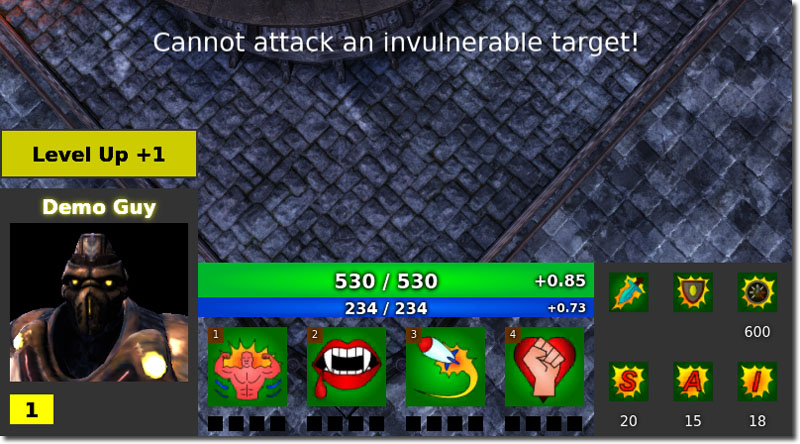
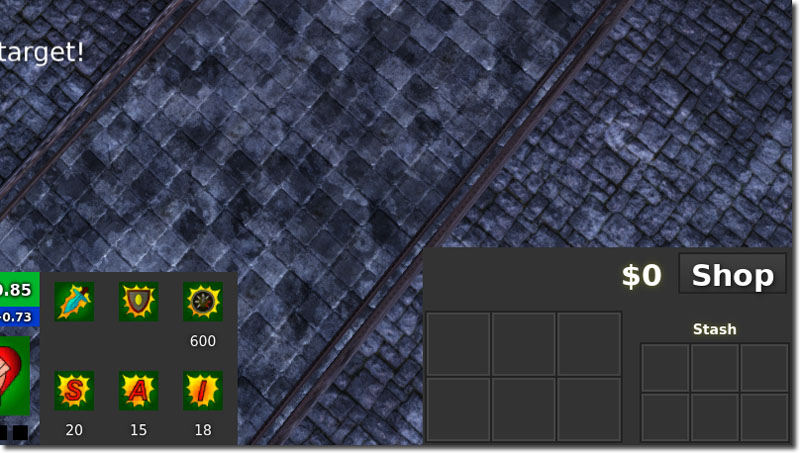
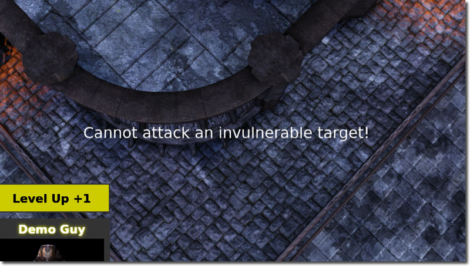
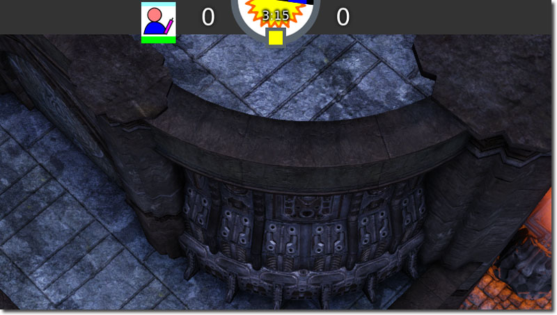

UDN
Search public documentation:
MOBAKitUI
中国翻译
한국어
Interested in the Unreal Engine?
Visit the Unreal Technology site.
Looking for jobs and company info?
Check out the Epic games site.
Questions about support via UDN?
Contact the UDN Staff
한국어
Interested in the Unreal Engine?
Visit the Unreal Technology site.
Looking for jobs and company info?
Check out the Epic games site.
Questions about support via UDN?
Contact the UDN Staff
MOBA Starter Kit - UI
Last tested against UDK May, 2012
Overview
MOBA's generally have a lot of information on the HUD. All of the HUD in the MOBA Starter Kit is done within Scaleform, and while the HUD classes still exists; it is mostly just a shell to forward commands to Scaleform or to pass along the Canvas instance. Some parts of the HUD is described in other documents, so this document focuses on areas which do not have their own sections.
Hero Area
 The hero area contains information about the state of the hero. It shows the hero's health, level, mana, portrait, spells and stats. The majority of the hero area box GFx widgets are cached in UDKMOBAGFxHUD::ConfigHero(). Most of the core logic is done in UDKMOBAGFxHUD::UpdateCurrentHero() which is called by UDKMOBAGFxHUD::Tick().
Health
The health portion has three parts to it.- Health bar
- Current health text
- Regeneration of health text
Mana
The mana portion has three parts to it.- Mana bar
- Current mana text
- Regeneration of mana text
Portrait
The portrait used depends on the platform. On the Mobile platform a static pre-rendered image is used, while on the PC platform a real time dynamic render target is used to produce an animating portrait. This is handled via UDKMOBAGFxHUD::SetHeroPortrait(), and all it does is set the texture resource to a Texture2D which is a parameter in that function. On the mobile platform, UDKMOBAHUD_Mobile::PostRender() is used to set the portrait. In this case, all this function does is to set a texture to the GFx widget. On the PC platform, UDKMOBAHUD_PC::PostRender() is used to set the portrait. On the PC platform it creates an off screen render target which captures an animating skeletal mesh that is spawned somewhere randomly in the map so that it doesn't interfere with the map. This creates the animating portrait without having to pre-render a portrait movie. This also allows you also change the hero art without having to rerender the portrait movie. You can also include other fancy effects such as particle effects, lighting effects and so forth.Spells
The spells section is created dynamically from complex Scaleform widgets. This is handled in UDKMOBAGFxHUD::ConfigSpells(). UDKMOBAGFxHUD::ConfigSpells() iterates over the heroes spells and dynamically attaches new GFx widgets to the HUD. It then binds those buttons to the appropriate event listeners and sets up everything else. The event listeners are what handle aspects such as leveling up a spell, triggering a spell and so forth.Stats
The stats section mostly just has text fields that are updated as the hero is updated. This is primarily updated in UDKMOBAGFxHUD::UpdateHeroStats(), and this simply grabs the values from the hero and assigns them to the text fields that have been cached within UDKMOBAGFxHUD::ConfigHero().Inventory Area
 The inventory area contains both the player's current inventory items and the player's stash inventory items. Both are predefined in Scaleform, and use a complex movie clip to handle the items. A text field is used to maintain the amount of money the player has, and the shop button is just a simple button which can have its chrome updated to indicate if the player was in the shop area or not. These are all cached in UDKMOBAGFxHUD::ConfigInventory().
Current Inventory Slots
Current inventory slots are on the left and are bigger than the stash inventory slots. These updated via UDKMOBAGFxHUD::NotifyItemReceived() which is called from UDKMOBAPawnReplicationInfo when the inventory array has changed. What this does is simply look up the cached GFx inventory array, and assigns the various widgets to the appropriate values.Stash Inventory Slots
This is updated in the same manner as current inventory slots.Cash text field
This is updated via the function UDKMOBAGFxHUD::NotifyMoneyUpdated(), and it simply sets the text of the text field. This is called by UDKMOBAPlayerReplicationInfo::MoneyUpdated() when the UDKMOBAPlayerReplicationInfo.Money variable has changed.Shop button
When this GFxClikWidget is initialized in UDKMOBAGFxHUD::ConfigInventory() it binds an event listener to a delegate called PressShop(). This delegate simply toggles the visibility of the ShopAreaMC. UDKMOBAGFxHUD::ToggleShopButtonChrome() is also used to change the color of the chrome button. The change of the color indicates whether the player is within their shop volume or not.Messages
 Messages are dynamically spawned movie clips that have text fields that are set. They also animate fading in and fading out to make the UI feel more polished and dynamic. Some helper functions have been added to UDKMOBAGFxHUD to make it easier to add messages.
- UDKMOBAGFxHUD::AddCenteredMessage() - This adds a message in the center of the screen.
- UDKMOBAGFxHUD::AddMessage() - This adds a message on the left of the screen.
Top Area
 The top area contains information about the general state of the game. On the far left is the main menu button, in the center is the kill count for the teams, an area where hero icons are shown and a day night clock, and on the far right is the kill, deaths and assists stats.